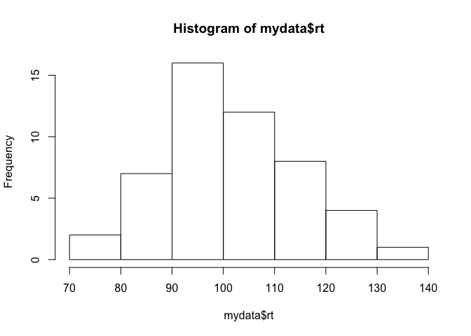
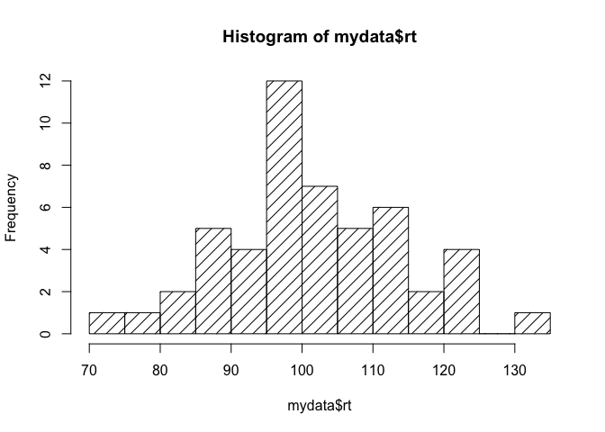

Indexing Data
Indexing with Brackets
You'll often need to refer to only part of an object, such as a single value in a vector, or a single row, column, or other portion of a data.frame. In R, you can use brackets [ ] after an object's name to select a subset of the object (also called indexing):
avector <- c(3, 6, 9, 12, 15, 18, 21, 24, 27) # Let's create a vector with 9 elements.
avector # prints the whole object
## [1] 3 6 9 12 15 18 21 24 27
avector[4] # prints the fourth element of the vector
## [1] 12
avector[4:7] # prints the 4th through 7th elements of the vector
## [1] 12 15 18 21
avector[c(4,5,6,7)] # same as the above line
## [1] 12 15 18 21
avector[-3] # drops the third element and prints the rest
## [1] 3 6 12 15 18 21 24 27
For two dimensional objects like data.frames, you enter two numbers in the bracket: the first is the row (or rows) you want to select, and the second is the column(s):
# First, let's recreate our random data.frame:
mydata <- data.frame(id = 1:50, # create a column named "id" with the numbers 1 through 50
condition = rep(c("A", "B"), 25), # create a "condition" column with A and B repeating
rt = rnorm(n = 50, mean = 100, sd = 15)) # create a third column named "rt" with randomly generated data
head(mydata) # Let's print the head of the data for reference.
## id condition rt
## 1 1 A 97.88828
## 2 2 B 99.00335
## 3 3 A 97.12588
## 4 4 B 95.51779
## 5 5 A 84.63846
## 6 6 B 96.83478
mydata[1, 3] # select a single cell in the first row, third column
## [1] 97.88828
# You'll see from the printout of head(mydata) above that this is the reaction time for participant 1.
mydata[3, ] # leave one of the numbers blank if you want to select all columns for a given row
## id condition rt
## 3 3 A 97.12588
mydata[, 3] # or all rows for a given column (rt)
## [1] 97.88828 99.00335 97.12588 95.51779 84.63846 96.83478 103.15444
## [8] 96.55686 124.52415 102.16705 98.67089 132.08099 77.05704 124.99174
## [15] 114.81214 112.26099 93.98117 74.89734 103.54251 107.38232 86.01469
## [22] 88.95094 89.04053 110.68045 120.56711 109.06280 119.83549 115.14795
## [29] 88.94589 101.26912 88.24853 100.86696 96.74147 90.66447 114.76147
## [36] 100.16092 98.65072 94.58490 113.57770 99.48745 81.45639 91.48639
## [43] 99.14611 108.31372 120.28770 112.03712 109.07390 104.34280 106.86190
## [50] 96.97260
mydata[, 'rt'] # also gets the rt column
## [1] 97.88828 99.00335 97.12588 95.51779 84.63846 96.83478 103.15444
## [8] 96.55686 124.52415 102.16705 98.67089 132.08099 77.05704 124.99174
## [15] 114.81214 112.26099 93.98117 74.89734 103.54251 107.38232 86.01469
## [22] 88.95094 89.04053 110.68045 120.56711 109.06280 119.83549 115.14795
## [29] 88.94589 101.26912 88.24853 100.86696 96.74147 90.66447 114.76147
## [36] 100.16092 98.65072 94.58490 113.57770 99.48745 81.45639 91.48639
## [43] 99.14611 108.31372 120.28770 112.03712 109.07390 104.34280 106.86190
## [50] 96.97260
mydata['rt'] # if you don't use a comma, it assumes you want a column
## rt
## 1 97.88828
## 2 99.00335
## 3 97.12588
## 4 95.51779
## 5 84.63846
## 6 96.83478
## 7 103.15444
## 8 96.55686
## 9 124.52415
## 10 102.16705
## 11 98.67089
## 12 132.08099
## 13 77.05704
## 14 124.99174
## 15 114.81214
## 16 112.26099
## 17 93.98117
## 18 74.89734
## 19 103.54251
## 20 107.38232
## 21 86.01469
## 22 88.95094
## 23 89.04053
## 24 110.68045
## 25 120.56711
## 26 109.06280
## 27 119.83549
## 28 115.14795
## 29 88.94589
## 30 101.26912
## 31 88.24853
## 32 100.86696
## 33 96.74147
## 34 90.66447
## 35 114.76147
## 36 100.16092
## 37 98.65072
## 38 94.58490
## 39 113.57770
## 40 99.48745
## 41 81.45639
## 42 91.48639
## 43 99.14611
## 44 108.31372
## 45 120.28770
## 46 112.03712
## 47 109.07390
## 48 104.34280
## 49 106.86190
## 50 96.97260
mydata[1:10, ] # You can select multiple rows and/or columns. Here, we're selecting the first ten rows, all columns.
## id condition rt
## 1 1 A 97.88828
## 2 2 B 99.00335
## 3 3 A 97.12588
## 4 4 B 95.51779
## 5 5 A 84.63846
## 6 6 B 96.83478
## 7 7 A 103.15444
## 8 8 B 96.55686
## 9 9 A 124.52415
## 10 10 B 102.16705
mydata[c(1, 3, 5),] # This will select the first, third, and fifth rows, all columns.
## id condition rt
## 1 1 A 97.88828
## 3 3 A 97.12588
## 5 5 A 84.63846
Note that you always need to include the comma when using brackets to subset a two-dimensional object like a data-frame. If you try mydata[1], you will get an error (because R doesn't know whether you're referring to the first row or column)
Usually, your data will have column names (like ours: id, condition, & rt). There is a better way to select and manipulate entire columns of data by referring to the column name. In a data.frame, each column is a vector of values, and you can select that vector by calling the name of the data.frame followed by the $ symbol and then the column name:
mydata$rt
## [1] 97.88828 99.00335 97.12588 95.51779 84.63846 96.83478 103.15444
## [8] 96.55686 124.52415 102.16705 98.67089 132.08099 77.05704 124.99174
## [15] 114.81214 112.26099 93.98117 74.89734 103.54251 107.38232 86.01469
## [22] 88.95094 89.04053 110.68045 120.56711 109.06280 119.83549 115.14795
## [29] 88.94589 101.26912 88.24853 100.86696 96.74147 90.66447 114.76147
## [36] 100.16092 98.65072 94.58490 113.57770 99.48745 81.45639 91.48639
## [43] 99.14611 108.31372 120.28770 112.03712 109.07390 104.34280 106.86190
## [50] 96.97260
mydata$condition
## [1] A B A B A B A B A B A B A B A B A B A B A B A B A B A B A B A B A B A
## [36] B A B A B A B A B A B A B A B
## Levels: A B
Because each column is a vector, you can use both the dollar sign notation and brackets to select a single value from a single column:
mydata$rt[10]
## [1] 102.1671
# is the same as:
mydata[10, 3]
## [1] 102.1671
mydata[10, 'rt']
## [1] 102.1671
Conditional Indexing
Sometimes, you need to conditionally select part of an object - for example, you need only the rows where reaction time is greater than 100. You can use >, \<, >=, \<=, and == in brackets to do this:
mydata[mydata$rt > 120, ] # Select rows of mydata where reaction time is greater than 120, all columns
## id condition rt
## 9 9 A 124.5241
## 12 12 B 132.0810
## 14 14 B 124.9917
## 25 25 A 120.5671
## 45 45 A 120.2877
How does this work? Let's see what's going on inside the brackets.
mydata$rt > 120
## [1] FALSE FALSE FALSE FALSE FALSE FALSE FALSE FALSE TRUE FALSE FALSE
## [12] TRUE FALSE TRUE FALSE FALSE FALSE FALSE FALSE FALSE FALSE FALSE
## [23] FALSE FALSE TRUE FALSE FALSE FALSE FALSE FALSE FALSE FALSE FALSE
## [34] FALSE FALSE FALSE FALSE FALSE FALSE FALSE FALSE FALSE FALSE FALSE
## [45] TRUE FALSE FALSE FALSE FALSE FALSE
This returns a logical vector with 50 values (one for each row), where each value indicates whether each item in the vector mydata$rt is greater than 120. When we include this in the brackets before the comma, R will select only the rows where the statement is TRUE.
Here are a few other examples of conditional indexing:
mydata[mydata$id <= 10,]
## id condition rt
## 1 1 A 97.88828
## 2 2 B 99.00335
## 3 3 A 97.12588
## 4 4 B 95.51779
## 5 5 A 84.63846
## 6 6 B 96.83478
## 7 7 A 103.15444
## 8 8 B 96.55686
## 9 9 A 124.52415
## 10 10 B 102.16705
mydata[mydata$condition == "A", ]
## id condition rt
## 1 1 A 97.88828
## 3 3 A 97.12588
## 5 5 A 84.63846
## 7 7 A 103.15444
## 9 9 A 124.52415
## 11 11 A 98.67089
## 13 13 A 77.05704
## 15 15 A 114.81214
## 17 17 A 93.98117
## 19 19 A 103.54251
## 21 21 A 86.01469
## 23 23 A 89.04053
## 25 25 A 120.56711
## 27 27 A 119.83549
## 29 29 A 88.94589
## 31 31 A 88.24853
## 33 33 A 96.74147
## 35 35 A 114.76147
## 37 37 A 98.65072
## 39 39 A 113.57770
## 41 41 A 81.45639
## 43 43 A 99.14611
## 45 45 A 120.28770
## 47 47 A 109.07390
## 49 49 A 106.86190
Notice that in the second example, we use the "double equals" sign to select the rows of mydata where condition is A. We use == instead of = for conditional formatting to differentiate it from other uses of the = sign. You could read this as "mydata where condition is equal to A".
Boolean Operators & Conditional Indexing
Sometimes, you might need to use multiple conditions to select the data you want. For example, you might need all rows of mydata where reaction time is greater than 100, but less than 110. In R, you use the & symbol to combine conditions when both must be true.
mydata[mydata$rt > 100 & mydata$rt < 110, ] # Select rows of mydata where reaction time is greater than 100 and less than 110, all columns
## id condition rt
## 7 7 A 103.1544
## 10 10 B 102.1671
## 19 19 A 103.5425
## 20 20 B 107.3823
## 26 26 B 109.0628
## 30 30 B 101.2691
## 32 32 B 100.8670
## 36 36 B 100.1609
## 44 44 B 108.3137
## 47 47 A 109.0739
## 48 48 B 104.3428
## 49 49 A 106.8619
You should use the & symbol when both conditions must be TRUE in order to select the data you need.
You might need to select part of an object depending on either one of two conditions. For example, you might need all rows of mydata where reaction time is less than 90 OR greater than 130. In R, you use the | (pronounced "or") symbol to combine conditions when either is true.
mydata[mydata$rt < 90 | mydata$rt > 130, ] # Select rows of mydata where rt is less than 90 or greater than 130, all columns
## id condition rt
## 5 5 A 84.63846
## 12 12 B 132.08099
## 13 13 A 77.05704
## 18 18 B 74.89734
## 21 21 A 86.01469
## 22 22 B 88.95094
## 23 23 A 89.04053
## 29 29 A 88.94589
## 31 31 A 88.24853
## 41 41 A 81.45639
When stringing together many & and | statements, you can use parentheses to control the order of operations. Suppose we need the data for only the first 10 participants with extreme reaction times (\< 90 or > 130). We could try:
mydata[mydata$id <= 10 & mydata$rt < 90 | mydata$rt > 130, ]
## id condition rt
## 5 5 A 84.63846
## 12 12 B 132.08099
Uh oh. We shouldn't have that fourth row, because they aren't one of the first ten participants. R includes that row because of the last OR statement (the reaction time is > 130). The correct way is:
mydata[mydata$id <= 10 & (mydata$rt < 90 | mydata$rt > 130), ]
## id condition rt
## 5 5 A 84.63846
The parentheses make sure that R evaluates the OR parts before the AND part.
The with and transform functions
Up to this point, we've accessed columns of a data.frame using the $
sign. However, the with function allows us to refer to the columns
directly.
# add 100 to first five entries of rt column
with(mydata, rt[1:5] + 100) # add 1 to the rt column
## [1] 197.8883 199.0033 197.1259 195.5178 184.6385
# same thing using dollar sign
mydata$rt[1:5] + 100
## [1] 197.8883 199.0033 197.1259 195.5178 184.6385
# note that it doesn't change mydata!
mydata$rt[1:5] # does not have 100 added to it
## [1] 97.88828 99.00335 97.12588 95.51779 84.63846
The transform function is similar, but let's you to copy a data.frame,
and add or modify columns of data.
newdata <- transform(mydata, high_rt = rt > 120)
head(newdata) # notice the added high_rt column
## id condition rt high_rt
## 1 1 A 97.88828 FALSE
## 2 2 B 99.00335 FALSE
## 3 3 A 97.12588 FALSE
## 4 4 B 95.51779 FALSE
## 5 5 A 84.63846 FALSE
## 6 6 B 96.83478 FALSE
with(newdata, rt[high_rt]) # we can refer to more than one column
## [1] 124.5241 132.0810 124.9917 120.5671 120.2877
The subset( ) function
There are many other ways to subset your data in R, using functions instead of brackets. One alternative is the subset( ) function. The subset function takes at least 2 arguments, the things you include inside of the parentheses when calling a function. The first argument is the object to be subsetted, and the second is a logical expression indicating which elements or rows to keep.
subset(mydata, rt > 130) # This selects all rows of mydata where rt > 130
## id condition rt
## 12 12 B 132.081
You can also indicate which columns you'd like to keep in the subset( ) function:
subset(mydata, rt > 130, c(condition, rt)) # select the condition and rt columns where rt > 130
## condition rt
## 12 B 132.081
You can be more explicit with the arguments if you'd like:
subset(x = mydata, subset = rt > 130, select = c(condition, rt)) # This is the same as the last example, but noting each argument explicitly
## condition rt
## 12 B 132.081
If you don't specify the arguments in this way, R will guess which code to pass to which argument.
Summarizing Data
Now you know how to select different columns, rows, and cells of your data. Let's learn some new functions that will help you summarize your data. We'll focus on the reaction time data for our dataset.
mean(mydata$rt) # Gives the mean (average) of RT
## [1] 101.8865
sd(mydata$rt) # Gives the standard deviation of RT
## [1] 12.5267
median(mydata$rt) # Gives the median value
## [1] 99.82418
min(mydata$rt) # Gives the minimum value
## [1] 74.89734
max(mydata$rt) # Gives the maximum value
## [1] 132.081
table( ) is another useful function. It counts the frequency of each value in a vector. For example, if we wanted to check how many participants we had per condition:
table(mydata$condition)
##
## A B
## 25 25
We can see that there are 25 participants in each condition.
Some Basic Data Visualization
Let's review a few functions that create basic, simple visualizations of your data.
Histograms
One of your first steps in analyzing any data should be to look at the histogram of your dependent variable. How is the data distributed? Is it normal? Is it skewed? Are there any outliers?
The hist() function is the simplest way to view a histogram of any
vector.
hist(mydata$rt)

The data appear to be more or less normally distributed, without any notable outliers. (This makes sense, since we generated the data by sampling randomly from a normal distribution.) You can add some arguments to the hist( ) function to alter the plot. (Remember, you can use TAB while inside the function's parentheses to see a list of arguments and what they do.)
hist(mydata$rt, breaks = 10) # breaks supplies the number of breaks in the histogram
hist(mydata$rt, breaks = 10, freq = F) # setting freq = F changes the y-axis to probability density instead of count/frequency
hist(mydata$rt, breaks = 10, density = 10) # density sets the density of shading

hist(mydata$rt, breaks = 10, xlab = "Reaction Time") # xlab and ylab change the labels on the X and Y axes.
Boxplots
A boxplot is a good way to compare the distributions of data across groups or conditions. Here's an example that plots and compares our reaction time in conditions A and B.
boxplot(mydata$rt ~ mydata$condition, xlab = "Condition", ylab = "Reaction Time")
You'll notice the new ~ symbol in the code. The ~ symbol is used in R to
write formulas, with the dependent variable in the left and the grouping
variable on the right. Here, we're telling R that we want a boxplot of
mydata$rt, grouped according to mydata$condition.
The dark solid line indicates the median value in each group. The top and bottom of the boxes are the 75th and 25th percentiles, respectively, and the endpoints reflect the range. Here, we see that reaction times are similar in conditions A and B (which makes sense, since we randomly sampled the data in each condition from the same distribution.)